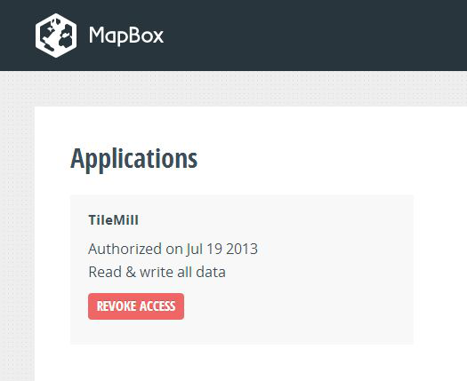
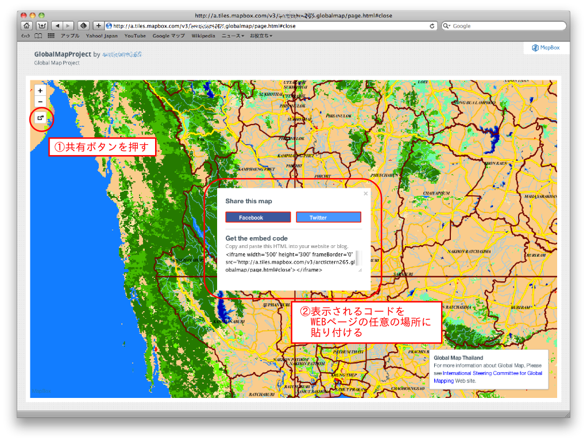

3-4．TExport from TileMill and disclosure¶
Once the map data created in exported, it becomes available for the use on othersoftware. Also, the disclosure of map data is possible by using cloud service. In this chapter, the setting method of a project as a preparation for exporting is first explained, then the export method to MBTiles file and upload method to MapBox web service.
・Project setting
A part of the project setting method has already been explained inChapter3-2. To open the project setting screen, refer to Chart 3-2-10 above.
Here is explained the project setting for export. The following setting can be performedwhenexporting with MBTiles format.
On the assumption that the default zoom level and the center point of the project is already set as inChapter3-2 in the project setting screen, we now set the extent of the project and zoom level.
The extent of the project is equal to that of the file to be exported. To determine the extent, drag on the mapwindowon the left with clicking a shift key.
Chart3-4-1．Determination of project extent
Once it is set, the project extent is displayed brightly and the rest becomes dark.
Now, we set the zoom level extent from [Zoom] slider in the right pane.
Chart3-4-2．Setting of zoom level extent
Since MBTiles files retainatile image corresponding to each zoom level, the file size becomes bigger as the number of zoom levels increases and it becomes more detailed. Although all the zoom extent (1～22) is set as the default, set it to the adequateextentnot to make the file size large.
Chart3-4-3．Setting of zoom extent
［MetaTile size］is the number of partitions in the tile structure. It consists of tile parts displayed and buffer area of 128pixel. The number of partitions is the number of partitions of the part displayed; to set it 2 means thatthe part is divided 4 (2×2). The number of partitions of MetaTile affects performances like display speed. The default setting (2) will cause no problem.
Click 「Save」after completing all the setting.
・Export to MBTiles format
To convert to MBTiles format, click【Export】at the upper left and select【MBTiles】from the dropdown menu.
Chart3-4-4．Select export menu
Now the window as Chart3-4-5 is displayed. This window is almost same as the project setting screenand the setting of the project setting is reflected. If you do not need to change, click「Export」. If you want to change the setting, for example, when you want to export only a part of the project, set adequately and click「Export」.
The export processing is performed in the background. Generally, it takessometime to export. The progress of export processing is displayed as in Chart 3-4-5.
Chart3-4-5．Progress of export processing
To cancel the export, click the trash box at the right of the progress bar. Export processing is continued even if you close the progress window. To check the progress again, select【Export】－【View exports】at the top right.
Chart3-4-6．Display of export state
When the export is completed, click「Save」button that appears.
Chart3-4-7．After completing export
Click「Save」and the screen as Chart 3-4-8 is displayed. If there is no problem, click「Save MBTiles」.
Chart3-4-8．MBTiles confirmation screen
A window that asks the storage destination is displayed. Specify thedestination and click「Save」.
Chart3-4-9．Specify the file storage destination
・Upload to MapBox and disclosure
In MapBox (http://www.mapbox.com/), map data created on the map platform on MapBox can be disclosed by uploading the map data created by TileMill. On disclosing, OpenStreetMap, topographic data and satellite data can be used as a background of the map. In case of afree account, the capacity of the data to be uploaded is 50MB. You need to select a pay plan if the bigger capacity is necessary.
Here is explained the method to upload directly from TileMill.３－４－１
First, create a MapBox account. Click『Sign up』at the upper rightof the top page of MapBox.
Chart3-4-10．MapBox top page
The account creation screen appears. Input your e-mail address, desired user name and password, then click 「CREATE ACCOUNT」button.
Chart3-4-11．Account creation screen
Once the account is created, a confirmation mail is sent from MapBox to the e-mail addressentered.Click the link shown in the mail and the creation of the account is completed.
Now log in to MapBox. Click『Log in』at the upper right of the top page of MapBox.
Chart3-4-12．Log in from the top page of MapBox
A login screen is displayed.Enterthe e-mail address and password previously set.
Chart3-4-13．Login screen
Log in and the dashboard as Chart 3-4-14 appears. There is no data yet at this stage.
Chart3-4-14．MapBox account dashboard
After finishing the account creation, go on to interlocking TileMill and the MapBox account. For this, click「Settings」at the left side of TileMill.
Chart3-4-15．TileMill setting button
Various settings on TileMillcan be performed in the setting screen. Click「Authorized」located around the center of the screen for interlocking with the MapBox account.
Chart3-4-16．TileMill settingscreen
If the account is logged in, the screen as Chart 3-4-17 is displayed. Click「ALLOW」to authorize if there is no problem.
Chart3-4-17．Loginscreen from TileMill to MapBox
Once the authorization is completed, a screen like Chart 3-4-18 is displayed.
Chart3-4-18．Authorization completed
The interlock state with TileMill can be checked from the MapBox account as well. Click the spanner icon at the upper right of the dashboard and select【Settings】from the dropdown menu.
Chart3-4-19．MapBox menu
Select「Applications」from the right side of the screen displayed.
Chart3-4-20．MapBox setting screen
Check the left side of the screen displayed to confirmthat TileMill is registered as shown in Chart 3-4-21.

Chart3-4-21．Confirmation of application registration
Onceinterlocking of TileMill and MapBox account is finished, map data can be uploaded from TileMill. For this, select【Export】-【Upload】from the menu at the upper right.
Chart3-4-22．Upload menu of TileMill
Then the screen like Chart3-4-23 is shown. If you find no problem, click「Next」and the upload is started.
Chart3-4-23．Upload confirmation screen
Chart3-4-24．Upload progress
When the upload is completed,「View」button as in Chart 3-4-25 is displayed. Click it and you can view the map data uploaded.
Chart3-4-25．Upload completion screen
Chart3-4-26．Map data uploaded
To disclose the map data uploaded, click「Share」button at the top left and paste the HTML code on display to the disclosure page.

Chart3-4-27．Sharing map data
Apart from the disclosure method above, there is a way to refer using Mapbox.js or iOS SDK, or you can publish as static image data. In order to perform more detailed disclosure setting, click the pencil button at the top left of the page and click「PUBLISH」at the top of the left panel displayed.
Chart3-4-28．Detaileddisclosure setting
Click「PUBLISH」and the screen as Chart 3-4-29 appears. The embedded code mentioned earlier is displayed by clicking［Easy Embed］. Thefollowingpicture is a disclosurescreen by Mapbox.js. About MapBox is explained in Chapter 4-2.
Chart3-4-29．Disclosure detail screen